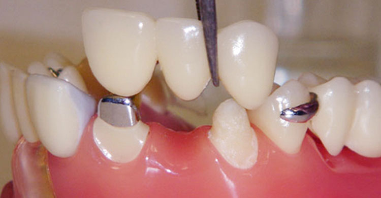
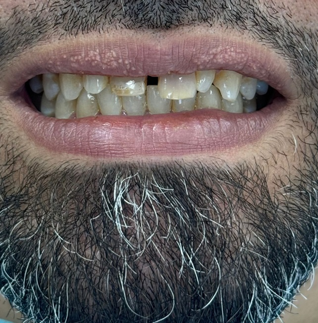
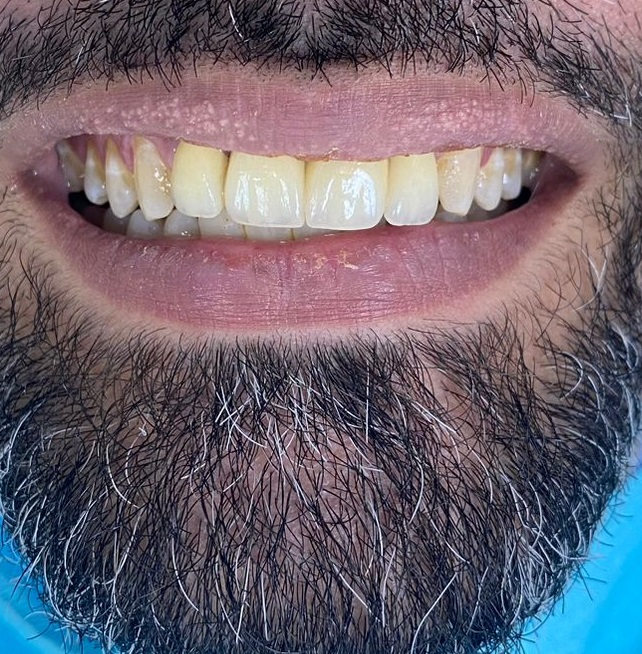

Crowns & Bridges

 Did you ever find yourself biting down on your jaw? Or nibbling on your nails when you're anxious? Besides, maintaining oral hygiene, habits like the ones previously mentioned can fracture or break your teeth which may call for dental crowns and/or bridges. Dental Crowns are prosthetic tooth coverings that are placed above dental implants to cover them, a week tooth to strengthen it or to hold a bridge in place. Additionally, crowns and bridges are widely used following a root canal treatment of a tooth/teeth.
Dental Crowns
Dental crowns or "caps" are protective coverings crafted by dental technicians to restore a tooth's function and appearance. They come in various materials like porcelain, ceramic and gold according to their unique features including stain resistance, extreme aesthetics, and supreme strength respectively.
Crown Recommendation


Barad Dental recommends crowns over other treatments due to their durability and long-term success. Whilst fillings which cover up a portion of the tooth, crowns fully encapsulate it. Hence, our dentists prefer crowns in the following scenarios:
- Root Canal Treatment: Proceeding an RCT, the tooth is still week from having extracted the tooth pulp. It needs to be fully protected from bacteria and infectious micro-organisms.
- Replacing Missing Teeth: When a tooth is missing, a dental implant replaces the root and bone of the tooth and a crown tops it. This implant-supported crown is robust, stable and beautiful.
- Cosmetic Enhancement: The patient in the case to the right complained from small frontal teeth and the gaps between them. "So, the treatment was to close the diastema with dental crowns," concludes Dr. Karam Zagzoog, an experienced dentist in crowns, bridges and endotreatment. "Crowns made his smile look normal!"
Crown Procedure
If an X-Ray proved that the patient needs a crown application, our dentists will thoroughly
clean the tooth
from any decayed or damaged portions and shape it according to the upcoming crown.
When the tooth is ready, we take molds of the tooth utilizing the most advanced
digital
technology in KSA. The tooth impressions, are then taken to dental technicians where they are
molded according to the material, we described: traditional for gold, for example, and
Computer-Aided Design (CAD) for composite resin.
Unlike other clinics, crown fabrication at
Barad Dental takes at most
5 days for completion and our patients are almsot always satisfied with the final crown
placement
where we bond the crown with the tooth using dental adhesive.
Dental Bridges
Dental bridges are prosthetic applicances that replace one or more missing teeth between natural teeth or dental implants. Like crowns, they restore a tooth's function and are considered very aesthetic. Unlike crowns, bridges enhance bite alignment without shifting nearby teeth.
Bridge Recommendation
Our dentists will recommend a bridge application when you are:
- Missing Teeth: Impaired speech, chewing and facial contours disappear upon the application of bridges to replace missing teeth.
- Not Enthusiastic about dental implants
- In danger of bite misalignment: Bridges can prevent neighboring teeth from taking up the missing tooth's space which can cause biting problems in the futures.
Bridge Procedure
Similar to the crown procedure, Barad's dentists typically adhere to the following steps:
- Tooth Examination & Preparation: Teeth are examined by X-Rays and any decay and/or damage is removed.
- Impression Taking: Molds are taken of the surrounding teeth using 3D technology for future bridge fabrication.
- Bridge Fabrication: In the dental laboratory, technicians prepare the permanent bridge placements.
- Final Bridge Placement: Dental adhesives bond the bridges to the natural teeth.
Frequently Asked Questions
Bridges, Crowns and Implants: FAQ's
What's the difference between bridges & crowns?
Bridges replace one or more teeth while a crown is a cap that covers
and protects the
entire tooth. Apart from their obvious purpose, bridges consist of one
or more
artificial teeth that are placed over crowns and/or implants. Crowns are tooth
restorations that fit over the entire tooth spanning all sides starting from the
gumline.
In contrast to bridges that restore chewing/ speaking abilities and
prevent teeth from tilting towards missing tooth spaces, crowns protect
a particular tooth from decay and strengthen them.
What's the difference between Crowns & Implants?
Implants are artificial tooth roots usually made from titanium that are placed (implanted) into the jawbone instead of a missing tooth root. Above these titanium-made implants or a salvaged natural tooth, a golden or ceramic crown is placed.
When does my dentist use crowns or bridges?
Dr. Karam Zagzoog differentiates between their main functions, "Usually, we use crowns after endo-treatment or for aesthetic reasons. On the other hand, we use the bridges if we have missing teeth. For example: if we did an extraction for one tooth, we need to fill that empty space so using a bridge."
Are there discounts for crowns, bridges and/or
implants?
If you are an Elite Patient, you definitely have a discount! However, if you are not, check out today's date. It might be your birthday! If it is, don't hesitate by calling us here to recieve a special Birthday Discount. Barad Dental offers many various discounts as it places your oral hygiene above your financial state! All you have to do is ring a bell!